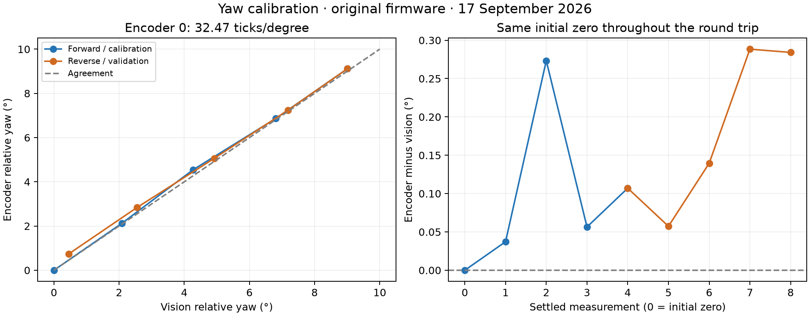
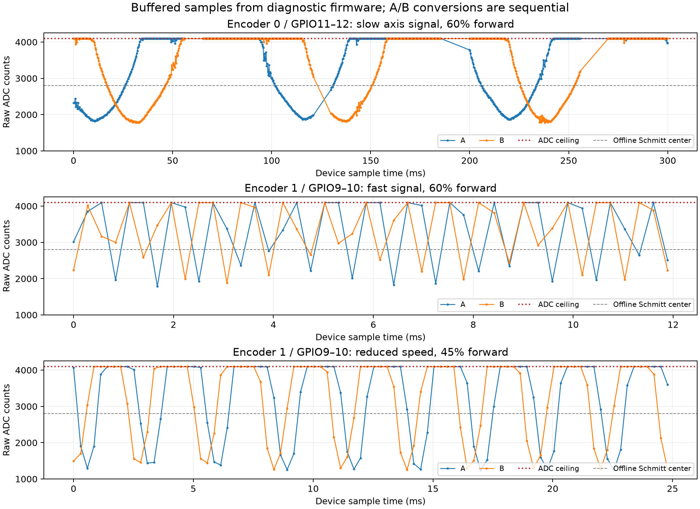

The working input is encoder 0, GPIO11/12. Its provisional conversion on the original installed firmware is:
yaw_degrees = reference_yaw + (encoder0_position - reference_position) × 0.03079533
32.47246 ticks/degree (approximately 32.5)
Positive counts corresponded to increasing camera yaw. A reference is necessary: this is an incremental sensor, not an absolute angle measurement. Do not apply this calibration to encoder 1, pitch, or changed firmware without rechecking the scale/sign.
USB UART was /dev/cu.wchusbserial112330; the board identified itself as CAN ID 78, MAC 90:70:69:1C:48:54. The camera tracker remained running. Its CSV is a rolling 10-row history, so each serial record was saved with the latest camera timestamp and angles in yaw_capture.jsonl.
A 30% duty / 0.5-second test produced no appreciable yaw motion. A 60% / 0.7-second pulse confirmed encoder 0 movement. Calibration then used four 60% / 2-second forward moves and four reverse moves, with settling time between moves. Camera yaw covered approximately 19.47° to 28.48°. The last second of each plateau supplied the median encoder position and mean of unique camera readings. The camera is logged at roughly 0.53-second intervals; moving samples were not used to claim accuracy.
| Result | Value |
|---|---|
| Scale fitted to four forward plateaus | 32.47246 ticks/° |
| Forward fit RMS residual | 0.093° |
| Reverse held-out RMS residual, using fitted intercept | 0.123° |
| Reverse held-out RMS error, using the initial physical zero | 0.216° |
| Largest reverse error, same initial zero | 0.288° |
| Encoder round-trip change | +24 ticks = +0.739° |
| Camera round-trip change | +0.455° |
| Round-trip discrepancy | 0.284° |
The same-zero figures are the useful ones for the new relative readout. At least two additional counts appeared after the initial short pulse had stopped, while vision stayed near 19.47°. This is consistent with decoder drift/noise; backlash or optical/mechanical effects may also contribute. A scale factor alone does not remove these errors.
A later stopped check showed encoder 0 unchanged at 2 ticks while camera yaw shifted from about 22.33° to 22.60° over roughly 3.5 minutes. That disagreement cannot distinguish vision drift, mechanical movement, or missed encoder motion; it reinforces that the measured short-run error is not a long-term accuracy guarantee.
This is a local, one-round-trip calibration at one main test speed. The vision measurement has its own pose error, and we have no independent angular standard. The results measure agreement with vision, not absolute accuracy over a full revolution, other speeds, or long periods. More displayed decimal places do not improve accuracy.

Both GPIO9 and GPIO10 have substantial signals during motor movement. At reduced speed they show consistent quadrature direction that reverses with the commanded direction. This argues strongly against a completely dead sensor or disconnected pair.
Given the original labels Motor_IR and Axis_IR, the measurements suggest:
This mapping is an inference from signal speeds, not confirmed wire tracing.
The installed image differs from the checked-in source: it rejects ENCODER 0 and has no ADC streaming command. I first measured that original image, backed up the entire configured 2 MiB flash, and then temporarily installed diagnostic builds of the current source. Therefore the exact implementation findings below concern current main/, not a claim that the original binary has identical code.
The diagnostic sampler buffered 1,024 samples in RAM before printing them, avoiding UART transmission speed as the acquisition limit. Each timestamp marks a completed group of four sequential ADC conversions; channels are not sampled simultaneously.
| Buffered capture | 60% forward | 45% backward | 45% forward |
|---|---|---|---|
| Duration of 1,024 samples | 0.346 s | 0.357 s | 0.356 s |
| Median spacing | 279 µs | 279 µs | 279 µs |
| Longest sampling gap | 14.36 ms | 14.60 ms | 14.67 ms |
| Encoder 1: either input clipped | 63.4% | 60.9% | 63.5% |
| Offline positive transitions | 196 | 352 | 1 |
| Offline negative transitions | 483 | 1 | 452 |
| Offline invalid opposite-quadrant jumps | 234 | 2 | 1 |
Offline counts used a Schmitt threshold centered at 2,800 ADC counts with ±100 hysteresis, retaining clipped samples as high states. These are diagnostic transitions, not calibrated motor position counts: sampling gaps still lose information.
At 60% forward, the slow pair had a dominant component near 9.5 Hz and roughly 83° A/B phase separation; the fast pair had a dominant sampled component near 1.36 kHz. The latter frequency is not an independently verified true shaft frequency: aliasing remains possible. At 45%, the fast pair's dominant components were roughly 348–388 Hz; speed varies within the short captures. Strong direction reversal at 45% is the most useful evidence of a functioning second sensor.

ENCODER_ADC_SAMPLE_PERIOD_US=100 requests 10 kHz, but four oneshot conversions take about 279 µs. Notifications coalesce, so past timer ticks do not recover missed signal history. The measured average rate is about 2.9 kHz including gaps.vTaskDelay(1) every 200 samples, with CONFIG_FREERTOS_HZ=100, introduces roughly 10 ms of waiting; measured gaps reached 14.7 ms. A fast motor encoder can traverse many quadrants during those gaps.encoder_process_sample() returns whenever either input is at the ADC rails. The captured motor pair loses roughly 61–63% of its samples to this rule. A saturated high value still contains useful sign information for threshold decoding. Adaptive analog normalization plus discarding those plateaus is a poor match here.ESP_ERR_TIMEOUT; previous wrappers ignored return values and returned success. Initial diagnostic streaming had many invalid reads. Serializing consumers and checking errors produced zero invalid channel values in a subsequent 565-record stream. This correction does not solve the rate/gap problem.Espressif documents the oneshot read timeout behavior and thread-safety guarantees in its ADC oneshot documentation. Local IDF v5.5.1 adc_oneshot.c also returns timeout when its hardware lock cannot be acquired.
S, duty 0%, encoder 0 at 2 ticks, and camera yaw about 22.60°. BLE clients need to reconnect.yaw-original-flash.bin; extracted restorable app: yaw-original-app.bin. These binary files are local and ignored by Git. Full backup SHA-256 is recorded in yaw-calibration.json.ENCODER CAPTURE adds a 1,024-sample diagnostic burst. These source changes build successfully but are not the firmware currently installed.Both the client production build and ESP-IDF diagnostic firmware build passed. Full-rate captures completed in all three tests. git diff --check passed. Client interaction with the physical board was not browser-tested after the firmware restore.
Confirm the Motor_IR/Axis_IR wire mapping and measure the actual input voltages with a scope. A reading of 4095 establishes ADC saturation, not a specific voltage or proof of electrical overvoltage. Check the sensor interface and board conditioning against the sensor supply and output type.
For the fast motor pair, use either continuous/DMA ADC acquisition with sufficient rate and no 10 ms gaps, or condition both signals with suitable comparators/Schmitt circuitry and feed ESP32 pulse-counting hardware. Do not simply switch these analog inputs to digital GPIO interrupts: the measured raw low levels do not establish valid digital-low voltage levels. Thresholds must be based on the real input voltages and signal range. Validate direction, missed transitions, and count ratios through the full speed range after the acquisition change.
For encoder 0, retain the provisional readout for coarse positioning, then repeat multi-speed, multi-angle, repeated forward/reverse sweeps after improving the decoder. Absolute calibration would require an independent angle reference.
From the repository root (Python scripts use pyserial/numpy from local_tools/.venv):
local_tools/.venv/bin/python local_tools/calibration/analyze_yaw.py
local_tools/.venv/bin/python local_tools/calibration/analyze_bursts.py
local_tools/.venv/bin/python local_tools/calibration/yaw_probe.py --seconds 5
# With diagnostic firmware only:
local_tools/.venv/bin/python local_tools/calibration/yaw_probe.py --burst --command 'MOTOR F 45 2' --seconds 7 --output /tmp/yaw-test.jsonl
uv run --quiet --no-project --with matplotlib --with numpy python local_tools/calibration/plot_results.py
The probe accepts only bounded motion (up to 60% duty, 5 seconds), checks fresh vision before motion, and sends stop on exit. The board's timed stop is independent of the host process. It does not monitor mechanical clearance; use it only in the tested clear operating area.